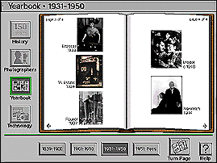

From Silver to Silica: A History of Photography
(c)
Location: Harrison Photography Gallery, 3rd floor
This program provides a set of interactive tools for learning more about the extensive photography collection at The Minneapolis Institute of Arts. Watch a segment on the history of photography or browse through the portfolios of the work of 39 photographers. To learn more about photographic techniques, simulate taking and printing one of your own photographs on the program's screen.